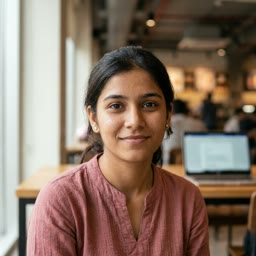

AAFT Placements · storyboard
Checkpoint 1, revised. Look matched to the Dr Marwah video; UI matched to the stage Space and the SPJIMR flow. Click a frame for full size.
Look, from the Dr Marwah video
- Sunset gradient ground (peach top-left, pink right, periwinkle bottom-right) on every scene except the final logo.
- Instrument Serif headline at the top centre, with one italic pink word, as in "Start a conversation".
- TwinCafe logo top-right from scene 2 onwards.
- The UI sits in a twincafe.com browser window, enlarged 1.32x so it reads at a distance.
- Editorial cards (YOU ASK style) sit outside the window for anything the product doesn't show.
UI, from the stage Space
- Geist, ink #111827, plum #3B0964, 5% grey chips, 18px cards, pill buttons.
- The Space avatar is the AAFT logo with a plum group badge, and the Twin is "AAFT Placement Prep's Twin".
- Questions use an @space mention chip. Your own message sits right-aligned in a grey bubble.
- The answer card has a "N Sources" pill and a "Request review" button.
- The interview path is Agents → Placement prep → list → task page; there's no Apps grid.
Interview, from the SPJIMR flow
- How it works modal: 1 Upload CV · 2 20 min call · 3 Get results, followed by 6 criteria.
- White call screen: plum orb, "19:52 left", and the interviewer's prompt centred. Captions are added in post, not on screen.
- Results page: resume chip, audio player, What went well, Areas of improvement, Your answers.
- Practice again on the task page replaces "Retry".
- The speaker goes on an outside card (YOU ASK style).
1 · Title, beat A 0:00–0:02.6
This mirrors the reference opener ("One visionary. One institution."): serif type on the gradient, left of centre, revealed at P1 label speed.
reimagined.
1 · Title, beat B 0:02.6–0:07.4
This mirrors "Meet the Digital Twins": the Space tile (AAFT logo plus the plum Space badge) pops in, with "a Space on twincafe" beneath.
2 · What is a Space 0:07.4–0:15.8
Four beats build one white Space card: members, then documents, then the Space Twin, then agents. The headline word swaps each beat (People → Knowledge → Twin → Agents), then the camera pushes into the card.

412 members
3e · Space Q&A, answer landed 0:31–0:37.6
The real Space UI: the @space question in your own bubble, P7 "Checking…" lines that collapse as the answer starts, then the real Deloitte answer (renamed and trimmed) with its 3 Sources pill. The headline swaps from 3c's line to this one. VO (new): "Another asks what Meridian Analytics will ask, and how to prepare. The answer draws on seniors' debriefs from past Meridian interviews." The question is said while it types; "seniors' debriefs" lands on the "Searching Recruiter Profiles and Debriefs" line. The film plays on an event screen, so the voice carries what the text can't.
- SQL: practise joins, aggregations, CTEs, and especially window functions. Be able to solve ranking questions such as finding the top three products by revenue in each region.
- Python: revise pandas—filtering, merges, missing-value handling, and grouping.
- Aptitude: practise timed quantitative and logical-reasoning questions.
4 · Placement prep list, cursor gliding 0:37.6–0:44.9
The cursor clicks Agents → Placement prep (the real panel), and the interview list fades in row by row. It glides down past 3–4 rows with a hover tint, then clicks Kissa Audio · Case interview.
Interviews
5a · Upload your CV 0:44.9–0:52.2
Unchanged visual (the real task page + How it works modal). New VO: "Students upload their CV, and get asked about their experience for the role they're applying to." Riya's CV chip lands in the modal on "upload their CV", the cursor clicks Start interview → "Starting your round…", then the window slides into the call.
5b · CV probe, Riya answering 0:52.2–1:03.8
No interviewer card. The call window already shows the interviewer's question (the real prompt) and the orb moves with the voice, so a card on the left would say it twice. While the interviewer asks, the left column holds only the headline. When Riya answers, her card fades in (her face, name and a pink "Speaking" pill) and the mic in the call pulses. It fades out as soon as the interviewer speaks again or the scene changes.
their own numbers
New · Every kind of round 1:03.8–1:11.8
The real New interview page (Placement prep → New interview). VO: "They can practise all types of interviews, like case interviews, technical rounds, HR discussions and more." On "all types of interviews", the window morphs back to full width and the page loads with the Interview type chips. On "case interviews", the cursor clicks Case interview. On "technical rounds", it clicks More and the real dropdown opens with Technical interview highlighted. On "HR discussions", it glides back to the HR interview chip (hover tint). On "and more", the rest of the open list (Situational interview, Analytics test, Guesstimate round, Other) says it, and the window morphs into a fresh case call (5c). The selected-chip look here is a stand-in until it matches the product's own selected state.
5c · The case, interviewer speaking 1:11.8–1:25.4
A fresh case call (timer reset). The interviewer's case is read from the call window's own prompt, which carries every number (₹20 and 4% for A, ₹32 and 14% for B). The left column holds only the headline: no interviewer card and no separate table, so nothing is said twice.
not a quiz
5d · Riya answers 1:25.4–1:30.7
Riya's card fades in under the headline as she answers. It holds for a second after she finishes, then fades as the window morphs back for the bridge.
not a quiz
Bridge · every school 1:30.7–1:36
The call window morphs back to full width, using the same move as in 5b in reverse, and lands on the Placement prep list from scene 4. The highlight glides down the rows and clicks Saffron Frame Studios · Situational interview, then the window morphs into the call layout again. The narrator line plays over the glide.
Interviews
6 · Cinema interview, Arjun answering 1:36–1:47.8
The same pattern for Saffron Frame Studios: while the interviewer asks, the left column holds only the headline, and the question sits in the call window. Arjun's card fades in when he answers and fades as the call ends.
every role
7 · Arjun's scorecard, top 1:47.8–1:51.8
The cursor clicks the red end-call button, the window morphs back to full width, and the scorecard loads. The dots fill to 3/4, the recording row slides in, and What went well streams in.
What went well
- You protected the shooting day first. Reshuffling to the scenes you could shoot without the lead kept the light and the crew working. Keep leading with the decision that saves the schedule.
- You spoke the language of a set: first AD, scene order, light. That made the answer credible. Keep using the crew's terms.
7 · Arjun's scorecard, by criteria 1:51.8–1:57.3
The page scrolls through Areas of improvement to By criteria, and the rows stagger in with their dots filling. The window holds there while the narrator finishes "…practise again as often as they like."
Areas of improvement
- You didn't say who else needs to know. Next time, name the producer and the actor's team, and say when you'd escalate if he isn't on set by a fixed time.
By criteria
8 · End card 1:57.3–2:05
This mirrors the reference close ("One visionary. One institution. Both always on."): the Space tile, two italic beats, and a serif payoff line.
One window, start to end
- The twincafe.com window enters once (out of the Space card, 0:15.8) and leaves once (shrinking back into the AAFT tile, 1:57.3). Everything between happens inside it.
- The gradient ground and the top-right logo never cut.
Two layouts, one move
- Browse: the window centred, with the headline on top. Call: the window on the right, with the headline and speaker cards on the left.
- Every switch uses the same 700ms ease-out morph, so viewers learn it once. 5a→5b and the bridge→6 go into the call; 5d→bridge and 6→7 come out of it.
Who's talking is always clear
- The interviewer lives in the call (orb and prompt). Only the student gets a card on the left, and only while they answer: it fades in on their first word and out when the interviewer speaks again.
- The orb moves only for the interviewer, and the mic pulses only for the student.
- The headline swaps with a dim-trail: the old line fades to grey first, then the new one arrives.
| Cut | Out | In | Why it reads |
|---|---|---|---|
| 1A → 1B · 0:04 | Serif line fades up and out | "Meet AAFT Placements" and the AAFT tile pop in | Name first, then the object |
| 1B → 2 · 0:08 | "a Space on twincafe" fades; the tile stays | The tile shrinks into the centre of the Space card as it builds; the logo fades in top-right | Shared element: the tile becomes the Space Twin |
| 2 → 3a · 0:15.8 | Camera pushes into the card (scale 1→1.6) | The card dissolves into the browser window showing the real Space | "We've entered the Space" |
| 3a → 3b → 3d | — | The question is typed into the composer, posts as a bubble, the answer streams, and the thread scrolls up for the next one | Continuous use of the product, no cuts |
| 3e → 4 · 0:37.6 | Cursor moves to Agents in the window | Agents panel → Placement prep → list rows stagger in | Cursor journey (P16): every change is caused by a click |
| 4 → 5a · 0:44.9 | Click the Kissa Audio row | Task page and How it works; the CV chip lands; click Start interview → "Starting your round…" | The real flow, compressed |
| 5a → 5b · 0:52.2 | Morph: the window slides right; the top headline fades | The call opens: orb, timer, prompt. The headline arrives on the left | The layout change marks "now in a call" |
| 5b → Rounds → 5c → 5d | The student's card fades out when the interviewer speaks; after 5b the window morphs back to the New interview page | Chips are picked as named, Case interview is clicked, More opens; the window morphs into a fresh case call | Interviewer = orb and prompt in the call. Student = their card on the left. Never both on the left |
| 5d → Bridge · 1:30.7 | Morph back: the left column fades and the window centres | The window shows the same list as scene 4; highlight glides to Saffron Frame and clicks | The return to the list says "new interview"; the narrator names it |
| Bridge → 6 · 1:36 | Click the row | Morph into the call: a new label, the timer reset | The same move as 5b; the new label carries the change |
| 6 → 7 · 1:47.8 | Cursor clicks the red end-call button; morph back | The scorecard page loads, the dots fill, then it scrolls to By criteria | End the call, get results: cause and effect |
| 7 → 8 · 1:57.3 | The window shrinks into the centre and fades | The AAFT tile reappears, the two lines reveal (P1), and the disclosure line fades in | Bookend with 1B; the tile opens and closes the film |
Five voices
- NARR: calm, warm, Indian English.
- INT_KA: Kissa Audio senior executive. INT_SF: Saffron Frame line producer.
- RIYA and ARJUN: early 20s, Indian English.
Who plays what
- Interview clips play in the HTML: the orb follows the interviewer's level, and the mic pulses for Riya and Arjun.
- Narrator goes in Descript. ?vo=1 plays it in the HTML for rehearsal.
- Captions are added in post.
Timing follows the clips
- The HTML reads each clip's real length and lays the scene out from it, so regenerating a line needs no retiming.
- The full line list and TTS text are in content/voice-script.md.
| # | Time | On screen | Headline | Notes |
|---|---|---|---|---|
| 1 | 0:00–0:07.4 | Beat A: serif line. Beat B: Space tile and "a Space on twincafe". | Placement season, reimagined. → Meet AAFT Placements | narr_01 |
| 2 | 0:07.4–0:15.8 | Space card builds on the VO's nouns, then the camera pushes in. | A Space has its own Twin / people / knowledge / agents | narr_02 |
| 3a | 0:15.8–0:19.5 | Window opens on the real Space; seed thread. | One Space, the whole batch | narr_03a |
| 3b–c | 0:19.5–0:27.5 | December question typed, then the answer streams. | Answers from AAFT's own documents | narr_03b (new): "A student asks which companies are coming in December. The Space answers from the placement cell's own drive calendar." · 3c answer is sample text until asked in the staging Space |
| 3d–e | 0:27.5–0:37.6 | Meridian Analytics question typed (28ms a character), then the real answer streams. | Prepare for every drive | narr_03d (new): "Another asks what Meridian Analytics will ask, and how to prepare. The answer draws on seniors' debriefs from past Meridian interviews." |
| 4 | 0:37.6–0:44.9 | Agents → Placement prep → list → click Kissa Audio. | Every recruiter, its own mock interview | narr_04 (new): "Every recruiter comes with its own mock interview. Students pick a company and start practising." |
| 5a | 0:44.9–0:52.2 | Task page → How it works → CV chip lands on "upload their CV" → Start interview → "Starting your round…". | Practise with their own CV | narr_05a (new): "Students upload their CV, and get asked about their experience for the role they're applying to." |
| 5b | 0:52.2–1:03.8 | Question in the call; Riya's card fades in for her answer, out after. | Pushed on their own numbers | int_05b_q · riya_05b_a |
| Rounds | 1:03.8–1:11.8 | Real New interview page: click Case interview → More opens on Technical → HR chip → morph to the case call. | Every kind of interview round | narr_05t (re-voiced): "They can practise all types of interviews, like case interviews, technical rounds, HR discussions and more." |
| 5c | 1:11.8–1:25.4 | Fresh case call; the case is in the call prompt; left column headline only. | A real case, not a quiz | int_05c_q |
| 5d | 1:25.4–1:30.7 | Riya's card fades in for her answer. | A real case, not a quiz | riya_05d_a |
| Bridge | 1:30.7–1:36 | Back to the list; glide to Saffron Frame; click. | Every school, every role | narr_06 (re-generated) |
| 6 | 1:36–1:47.8 | Question in the call; Arjun's card fades in for his answer; then end call. | Every school, every role | int_06_q · arjun_06_a |
| 7 | 1:47.8–1:57.3 | Arjun's scorecard: dots, recording, What went well → By criteria. | Every attempt, a scorecard | narr_07 · scores are placeholders |
| 8 | 1:57.3–2:05 | Window shrinks into the AAFT tile; two lines; disclosure. | Every question answered. Every interview practised. | narr_08 (re-voiced): "Every question answered. Every interview practised. Placement-ready, around the clock." |